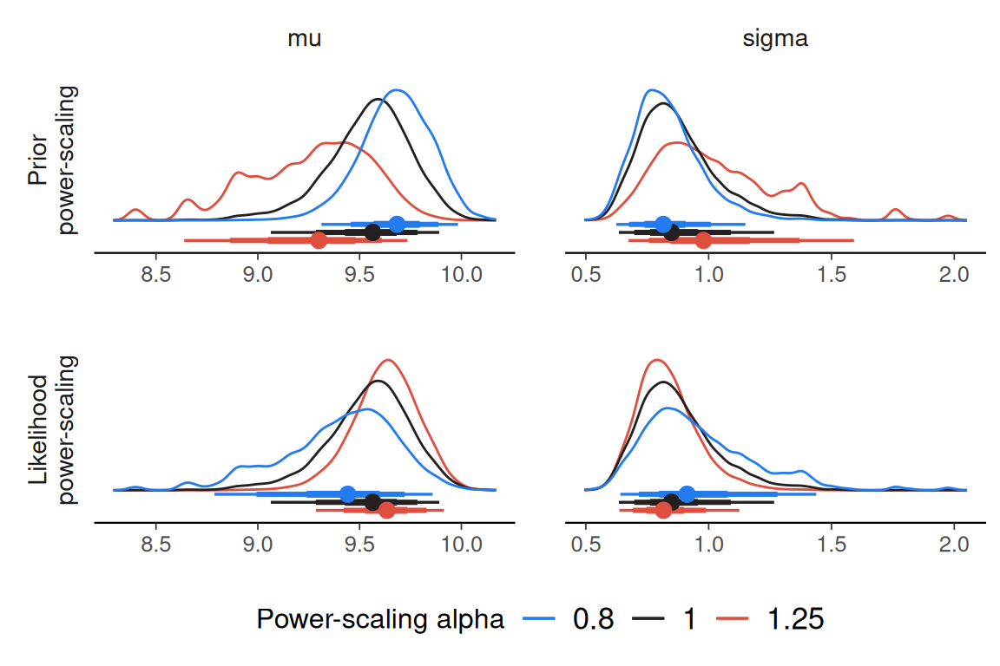

library(R2jags)
library(posterior)
library(priorsense)To use priorsense with a JAGS model, the log prior and log likelihood evaluations should be added to the model code.
model_string <- "
model {
for(n in 1:N) {
y[n] ~ dnorm(mu, tau)
log_lik[n] <- likelihood_alpha * logdensity.norm(y[n], mu, tau)
}
mu ~ dnorm(0, 1)
sigma ~ dnorm(0, 1 / 2.5^2) T(0,)
tau <- 1 / sigma^2
lprior <- prior_alpha * logdensity.norm(mu, 0, 1) + logdensity.norm(sigma, 0, 1 / 2.5^2)
}
"Using R2jags::jags() to fit the model.
model_con <- textConnection(model_string)
data <- example_powerscale_model()$data
set.seed(123)
# monitor parameters of interest along with log-likelihood and log-prior
variables <- c("mu", "sigma", "log_lik", "lprior")
jags_fit <- jags(
data,
model.file = model_con,
parameters.to.save = variables,
n.chains = 4,
DIC = FALSE,
quiet = TRUE,
progress.bar = "none"
)Then the priorsense functions will work as usual.
powerscale_sensitivity(jags_fit)Sensitivity based on cjs_dist
Prior selection: all priors
Likelihood selection: all data
variable prior likelihood diagnosis
mu 0.753 0.524 potential prior-data conflict
sigma 0.503 0.468 potential prior-data conflict
powerscale_plot_dens(jags_fit)